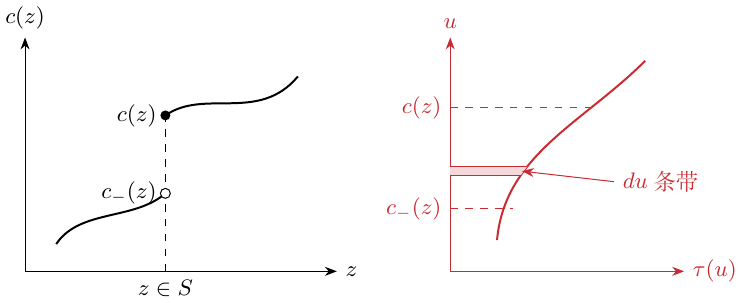

第 10 讲：局部平均处理效应
回顾第 9 讲的 IV 模型： \[Y_i=\alpha+W_i\tau+\varepsilon_i,\quad\varepsilon_i\perp Z_i, \qquad W_i=Z_i\gamma+\eta_i.\tag{10.1}\] 当 \(Z_i\) 为二元变量时， \[\begin{aligned} \tau&=\frac{\operatorname{Cov}(Y_i,Z_i)}{\operatorname{Cov}(W_i,Z_i)}\\ &=\frac{\mathbb E[Y_i\mid Z_i=1]-\mathbb E[Y_i\mid Z_i=0]} {\mathbb E[W_i\mid Z_i=1]-\mathbb E[W_i\mid Z_i=0]}. \end{aligned} \tag{10.2}\]
不依从情形下的处理效应
在存在不依从的 RCT 中，\(Y_i\in\mathbb R\) 是通常的结果变量；\(W_i\in\{0,1\}\) 是实际接受的处理，并未随机化；\(Z_i\in\{0,1\}\) 是随机化的处理分配。
(10.1) 中的常数 \(\tau\) 可能并不合适，而且是否接受处理可能与处理效应相关。定义潜在的处理接受状态 \(W_i(0),W_i(1)\)，满足 \(W_i=W_i(Z_i)\) 以及 \(Y_i=Y_i(W_i(Z_i))\)。
IV 有效性假设为：
排除限制：\(Y_i(w,z)=Y_i(w)\)。分配仅通过实际接受的处理影响结果。
外生性：\(\{Y_i(0),Y_i(1),W_i(0),W_i(1)\}\perp Z_i\)。分配是随机的。
相关性：\(\mathbb E[W_i(1)-W_i(0)]\ne0\)。分配会影响是否接受处理。
有四种依从类型：
| \(W_i(1)=0\) | \(W_i(1)=1\) | |
|---|---|---|
| \(W_i(0)=0\) | 从不接受者 | 依从者 |
| \(W_i(0)=1\) | 反向依从者 | 总是接受者 |
假设没有反向依从者，即满足单调性：
\[W_i(1)\ge W_i(0)\quad\text{对每个 }i.\]
于是 \[\begin{aligned} &\mathbb E[Y_i\mid Z_i=1]-\mathbb E[Y_i\mid Z_i=0]\\ &\quad=\mathbb E[Y_i(W_i(1))\mid Z_i=1] -\mathbb E[Y_i(W_i(0))\mid Z_i=0]\\ &\quad=\mathbb E[Y_i(W_i(1))-Y_i(W_i(0))]\\ &\quad=\mathbb E[\mathbf1\{C_i=\mathrm{complier}\} (Y_i(1)-Y_i(0))]. \end{aligned}\] 若依从者存在，使用 Bayes 法则得到 \[\begin{aligned} \tau_{\mathrm{LATE}} &=\frac{\mathbb E[Y_i\mid Z_i=1]-\mathbb E[Y_i\mid Z_i=0]} {\mathbb E[W_i\mid Z_i=1]-\mathbb E[W_i\mid Z_i=0]}\\ &=\mathbb E[Y_i(1)-Y_i(0)\mid C_i=\mathrm{complier}]. \end{aligned} \tag{10.3}\] 这就是依从者平均处理效应。 还须假设 \(0<P(Z=1)<1\) 且依从者比例为正。由此识别依从者平均效应，一般并非总体 ATE。
我的蓝色补记。
当常数效应模型 (10.1) 不成立，并存在从不接受者、总是接受者、反向依从者等类型时，个体差值 \(Y_i(1)-Y_i(0)\) 一般不可观测。尤其是，从不接受者永远不会被观测到 \(W_i=1\)。总体 ATE 为 \(\mathbb E[Y_i(1)-Y_i(0)]\)，仅依从者的结果并不足以识别它。
供给与需求
对每个市场 \(i=1,\ldots,n\)，设供给曲线为 \(S_i(p,z)\)，需求曲线为 \(Q_i(p,z)\)，其中价格 \(p\in\mathbb R\)，工具变量 \(z\in\{0,1\}\)。假设供给随价格连续且严格递增，需求连续且严格递减，并且两条曲线相交。均衡价格 \(P_i\) 是下式的唯一解： \[S_i(P_i,Z_i)=Q_i(P_i,Z_i).\] 因此，\(Z_i\) 是 IV，\(P_i\) 是处理，\(Q_i(P_i,Z_i)\) 是结果 \(Y_i\)。
\[Z_i\longrightarrow S_i\longrightarrow P_i\longrightarrow Q_i(P_i).\]
约束条件：
排除限制：对每个 \(p,z\)，\(Q_i(p,z)=Q_i(p)\)。
外生性：\(\{Q_i(p),S_i(p,z)\}\perp Z_i\)。
相关性：\(\operatorname{Cov}(P_i,Z_i)\ne0\)。
单调性：对所有相关的 \(p\)，\(S_i(p,1)\le S_i(p,0)\)。
下面的普通积分公式假设需求在受影响的价格区间上绝对连续，并满足 Fubini 所需的可积性。我的进一步想法是：即使没有普通导数，单调需求也存在分布意义的导数。 \[\begin{aligned} \tau_{\mathrm{LATE}} &=\frac{\mathbb E[Q_i\mid Z_i=1]-\mathbb E[Q_i\mid Z_i=0]} {\mathbb E[P_i\mid Z_i=1]-\mathbb E[P_i\mid Z_i=0]}\\ &=\frac{\displaystyle\int \mathbb E[Q_i'(p)\mid P_i(0)\le p\le P_i(1)] P[P_i(0)\le p\le P_i(1)]\,dp} {\displaystyle\int P[P_i(0)\le p\le P_i(1)]\,dp}. \end{aligned}\] 分母是总权重。
补充说明：分布导数
对仅单调的需求函数，导数是有符号测度 \(dQ_i\)，且 \(Q_i(P_i(1))-Q_i(P_i(0))=\int_{(P_i(0),P_i(1)]}dQ_i\)。这种解释包括普通导数密度未必捕捉的奇异连续变化。
推导。
\[\begin{aligned} &\mathbb E[Q_i\mid Z_i=1]-\mathbb E[Q_i\mid Z_i=0]\\ &\quad=\mathbb E[Q_i(P_i(1))\mid Z_i=1] -\mathbb E[Q_i(P_i(0))\mid Z_i=0]\\ &\quad=\mathbb E[Q_i(P_i(1))-Q_i(P_i(0))]\\ &\quad=\mathbb E\left[\int_{P_i(0)}^{P_i(1)}Q_i'(p)\,dp\right]\\ &\quad=\int\mathbb E[Q_i'(p)\mid P_i(0)\le p\le P_i(1)] P[P_i(0)\le p\le P_i(1)]\,dp. \end{aligned}\]
Fubini：交换积分次序 \(\textcolor{red}{\longrightarrow}\) \(E[\int Q_i'(p)\,dp]\) 变成期望的积分。
阈值跨越与支付意愿
假设每个受试者都有不可观测的内生变量 \(U_i\)，满足 \[W_i=\mathbf1\{U_i\ge c(Z_i)\},\] 其中 \(c(z)\) 是依赖工具变量的阈值函数。不失一般性，取 \(U_i\sim\operatorname{Unif}[0,1]\)，于是 \[c(z)=1-P(W_i=1\mid Z_i=z).\] 这里使用 \(U\perp Z\) 及有效截点 \(c(z)\in[0,1]\)。连续潜变量分布可以直接作均匀秩变换；含原子的分布需要另行论证。
IV 设定要求：
潜在结果 \(Y_i(0),Y_i(1)\) 满足 \(Y_i=Y_i(W_i)\)：工具变量不存在直通结果的路径。
\(\{Y_i(0),Y_i(1),U_i\}\perp Z_i\)：外生性。
\(c(Z_i)\) 具有非平凡分布：相关性。
\(c(z)\) 是 càdlàg（右连续且存在左极限）的非减函数。此时 \(W_i\) 随 \(Z_i\) 非增。 反转工具变量方向后，转换组就具有前面的依从者解释。两个 IV 协方差的符号同时反转，比值不变。
定义边际处理效应（MTE） \[\tau(u)=\mathbb E[Y_i(1)-Y_i(0)\mid U_i=u].\tag{10.6}\] IV 的目标参数是 \(\tau(u)\) 的加权平均。设 \(Z_i\sim\mathcal N(0,1)\)，密度为 \(\varphi\)。令 \(S\subset\mathbb R\) 为 \(c\) 的不连续点集，并定义 \[c_-(z)=\lim_{a\uparrow z}c(a).\] 若 \(c\) 仅有绝对连续变化和跳跃，表示式为 \[\tau_{\mathrm{LATE}}= \frac{\displaystyle\sum_{z\in S} \left\{\int_{c_-(z)}^{c(z)}\tau(u)\,du\right\}\varphi(z) +\int_{\mathbb R\setminus S}\tau(c(z))c'(z)\varphi(z)\,dz} {\displaystyle\sum_{z\in S}(c(z)-c_-(z))\varphi(z) +\int_{\mathbb R\setminus S}c'(z)\varphi(z)\,dz}.\] 这将 IV 目标参数表示为边际处理效应的凸平均。
我对权重的解释。
图中画出 \(c(z)\) 随 \(z\) 的变化，在左极限处画空心点，跳跃后的函数值处画实心点。跳跃位置属于 \(S\)。

在跳跃处，对从 \(c_-(z)\) 到 \(c(z)\) 的条带内的 \(\tau(u)\) 积分，再乘以 \(\varphi(z)\)。在连续部分，取 \(u=c(z)\) 处的处理效应，以 \(c'(z)\varphi(z)\) 加权。
高斯密度因子 \(\textcolor{red}{\longrightarrow}\) \(\varphi(z)\)。
\(u=c(z)\) 处的处理效应 \(\textcolor{red}{\longrightarrow}\) \(\tau(c(z))\)。
权重 \(\textcolor{red}{\longrightarrow}\) \(c'(z)\varphi(z)\)。
分母累加总权重。 \(\varphi(z)\) 是密度值，而非 \(P(Z=z)\)。归一化前，跳跃权重是 \((c(z)-c_-(z))\varphi(z)\)。 第二幅草图在跳跃对应的 \(u\) 区间内标出窄的 \(du\) 阴影条带，使其贡献更直观。
关于单调性。
有界单调截点 \(c\) 具有有界变差，可以用 Stieltjes 测度 \(dc\) 描述。若进一步绝对连续，则 \[c(z)=c_0+\int_{-\infty}^z c'(a)\,da,\] 且 \(c'\ge0\)。仅有单调性时，普通导数积分可能遗漏跳跃或奇异连续变化。
单次跳跃、多次跳跃与连续阈值
例 1：一次跳跃。
设阈值除一次跳跃外保持常数： \[c(z)=c_0+\delta_1\mathbf1\{z\ge z_1\},\] 各组为（反转工具变量方向后，中间组为依从者） \[\begin{array}{ll} \text{从不接受者：}&U_i<c_0,\\ \text{转换组：}&c_0\le U_i<c_0+\delta_1,\\ \text{总是接受者：}&U_i\ge c_0+\delta_1. \end{array}\]
当有 \(K\) 次跳跃时， \[c(z)=c_0+\sum_{k=1}^K\delta_k\mathbf1\{z\ge z_k\},\] 可得 \[\tau_{\mathrm{LATE}}= \frac{\displaystyle\sum_{k=1}^K \mathbb E[\tau(U_i)\mid c_-(z_k)\le U_i<c(z_k)] (c(z_k)-c_-(z_k))\varphi(z_k)} {\displaystyle\sum_{k=1}^K(c(z_k)-c_-(z_k))\varphi(z_k)}.\] 这是各个转换层内平均处理效应的凸组合。权重依赖各层在 \(U\) 空间中的大小，以及 \(\varphi(z_k)\)。
例 2：连续阈值。
若 \(c(z)\) 绝对连续，公式变为 \[\tau_{\mathrm{LATE}}= \frac{\displaystyle\int_{\mathbb R}\tau(c(z))c'(z)\varphi(z)\,dz} {\displaystyle\int_{\mathbb R}c'(z)\varphi(z)\,dz}.\] 协方差推导为 \[\begin{aligned} \operatorname{Cov}(Y_i,Z_i) &=\operatorname{Cov}(Y_i(0)+(Y_i(1)-Y_i(0))W_i,Z_i)\\ &=\operatorname{Cov}((Y_i(1)-Y_i(0))W_i,Z_i)\\ &=\operatorname{Cov}((Y_i(1)-Y_i(0))\mathbf1\{U_i\ge c(Z_i)\},Z_i)\\ &=\operatorname{Cov}(\tau(U_i)\mathbf1\{U_i\ge c(Z_i)\},Z_i). \end{aligned}\] 定义 \[H(z)=\mathbb E[\tau(U_i)\mathbf1\{U_i\ge c(z)\}].\] 对标准高斯变量 \(Z_i\)，若 \(H\) 绝对连续并满足所需可积性，高斯分部积分给出 \[\operatorname{Cov}(H(Z_i),Z_i)=\mathbb E[H'(Z_i)].\]
我的疑问：分布导数。
\(H'(z)\) 表示 \(H(\cdot)\) 的分布导数吗？我尝试把跳跃与连续部分写在一起： \[-H'\;\stackrel{?}{=}\; \begin{cases} \left\{\displaystyle\int_{c_-(z)}^{c(z)}\tau(u)\,du\right\}\delta_z,&z\in S,\\ \tau(c(z))c'(z),&\text{其他部分}. \end{cases}\] 这里想到的是位于 \(z\) 的 Dirac delta：质量集中于一点，总质量为 \(1\)。这个分段式只是我对测度与密度的尝试性简写。
补充推导：把分布导数写成测度
令 \(F(u)=\int_0^u\tau(v)\,dv\)。由于 \(H=F(1)-F\circ c\)，正确的整体表达是 \(-dH=d(F\circ c)\)。在跳跃 \(z\) 处，其质量为 \(\int_{c_-(z)}^{c(z)}\tau(u)\,du\)；在绝对连续部分，其密度为 \(\tau(c(z))c'(z)\)，还可能有奇异连续部分。Dirac delta 应作为测度或分布理解，并非普通函数。 对右连续、非减、取值于 \([0,1]\) 的非平凡截点，假设 \(\tau\) 可积且所需协方差矩存在，高斯分部积分给出 \[\tau_{\rm IV}=\frac{\int_{\mathbb R}\varphi(z)\,d[F(c(z))]}{\int_{\mathbb R}\varphi(z)\,dc(z)}.\] 两个协方差各带一个负号，取比值时抵消。这保留了我对跳跃条带权重的理解，也包括普通积分可能遗漏的变化。1
估计边际处理效应
在 \(c(z)\) 的光滑点处， \[\tau(c(z))= \frac{\displaystyle\frac d{dz}\mathbb E[Y_i\mid Z_i=z]} {\displaystyle\frac d{dz}P(W_i=1\mid Z_i=z)}.\tag{10.12}\] 假设这些导数性质良好，分子、分母可估计，而且分母非零。 该式识别的潜在秩限于工具变量倾向得分覆盖的范围。目标点处需要 \(c'(z)\ne0\)，且对 \(F(u)=\int_0^u\tau(v)\,dv\) 有 \(F'(c(z))=\tau(c(z))\)；\(\tau\) 在该点连续是充分条件。
证明。
\[\begin{aligned} \mathbb E[Y_i\mid c(Z_i)=c] &=\mathbb E[Y_i(0)+\mathbf1\{U_i\ge c\}(Y_i(1)-Y_i(0)) \mid c(Z_i)=c]\\ &=\mathbb E[Y_i(0)+\mathbf1\{U_i\ge c\}(Y_i(1)-Y_i(0))]\\ &=\mathbb E[Y_i(0)]+\int_c^1\tau(u)\,du. \end{aligned}\] 最后一步由 Fubini 定理交换积分次序。因此 \[\tau(c)=-\frac d{dc}\mathbb E[Y_i\mid c(Z_i)=c].\] 由链式法则， \[\frac d{dz}\mathbb E[Y_i\mid Z_i=z] =\left.\frac d{dc}\mathbb E[Y_i\mid c(Z_i)=c]\right|_{c=c(z)}c'(z).\] 由于 \(U_i\sim\operatorname{Unif}(0,1)\) 且独立于 \(Z_i\)， \[c'(z)=-\frac d{dz}P(W_i=1\mid Z_i=z).\] 合并这些恒等式，就得到 (10.12)，结论成立。
讲义第 10 讲脚注 4 的有界变差论述也需要这一测度解释。↩︎